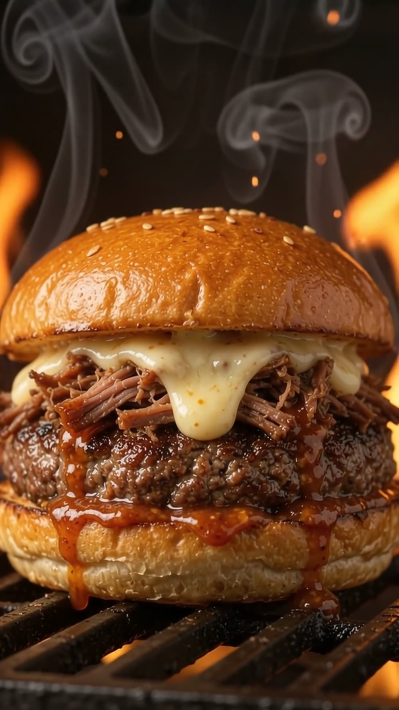
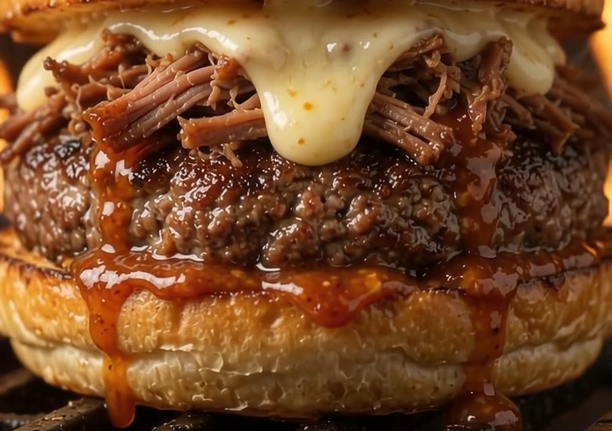
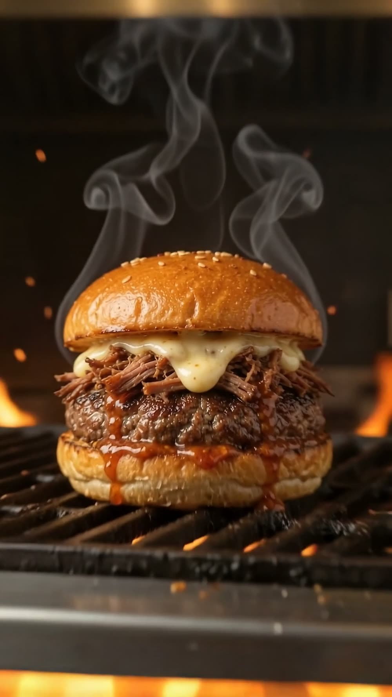
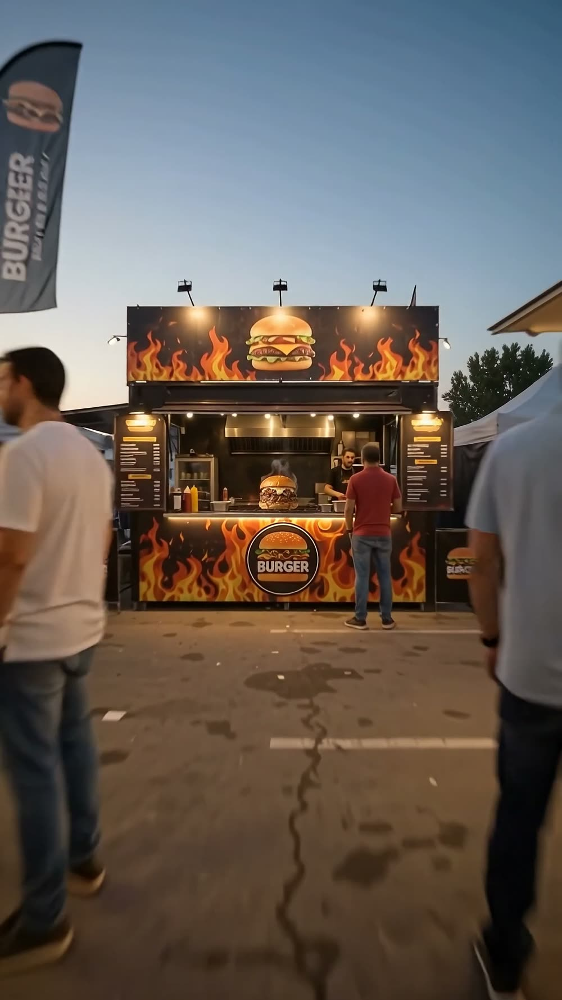
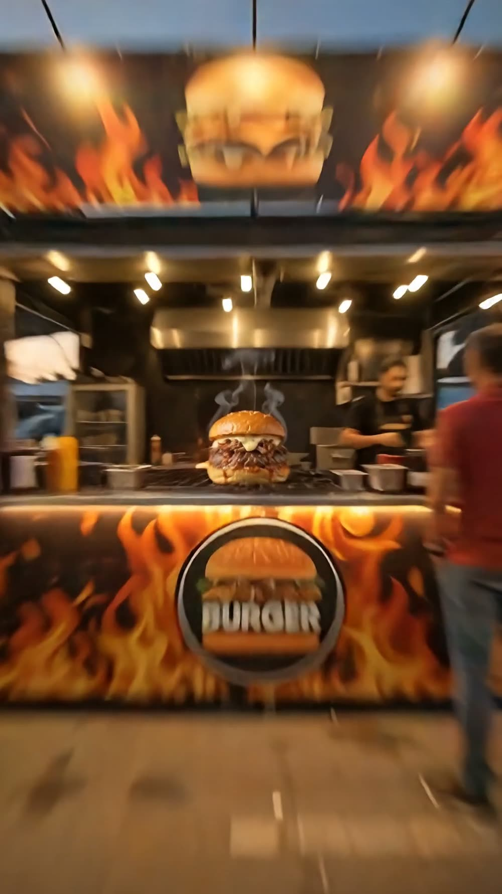
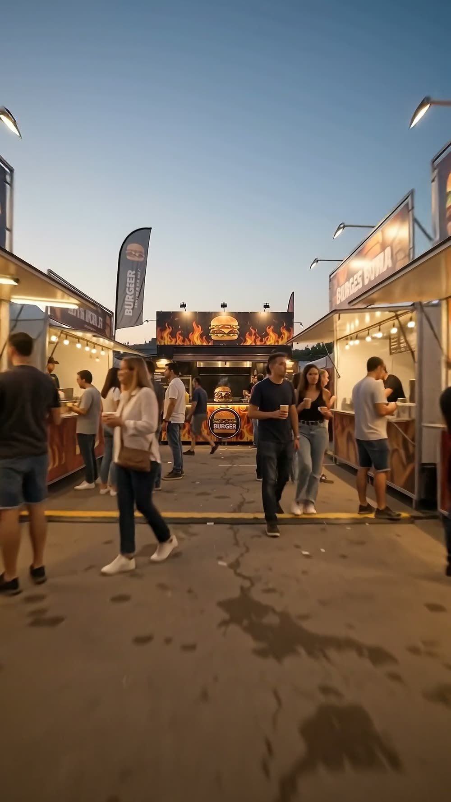

Mechada Hot
Vídeo vertical e imágenes en 4K. Con las fotos de tu móvil basta.
Todo lo de esta página está hecho así.
Ves una referencia de tu plato antes de pagar nada
Las pruebas
Ninguno de estos vídeos es un encargo. Son pruebas que me hago a mí mismo con una hamburguesa que no existe, para enseñar hasta dónde llega esto.
Los vídeos llevan marca de agua porque son muestras. El tuyo se entrega limpio.
Sale contigo delante. Vemos juntos la referencia, y a partir de ahí se ajusta sobre la marcha: el plano, el ritmo, el texto, cuánta salsa cae. Cambiar algo son minutos, no días, así que lo movemos hasta que digas «ese es».
Lo que se entrega
Las imágenes
Producto, puesto, ambiente y detalle. Material para semanas sin repetir foto.






El pack
Cuéntame qué necesitas —otra duración, más piezas, varios platos, el local entero— y lo hacemos a tu medida. Suele salir por menos de lo que la gente se imagina.
El trato
Primero la referencia.
Si no reconoces tu hamburguesa, ahí se queda.
No produzco nada hasta que veas una imagen del plato y me digas que sí. Si no te convence, no seguimos y no pagas. Sin discusión y sin quedarnos a medias.
Cómo se hace
Unas fotos normales de tu hamburguesa —las del móvil valen— y me cuentas los ingredientes, dónde se come y para cuándo.
De la hamburguesa, sobre todo. Con el móvil basta: varias desde distintos ángulos y con la luz que tengas. No hace falta que salgan bonitas, hacen falta para que la mía se parezca a la tuya.
Para eso está la referencia. No avanzo sin tu sí.
Es publicidad, como la foto de cualquier carta. La diferencia es que aquí se dice en voz alta y se parte de tu producto real.
Pedido
Rellena lo que sepas. Se abre WhatsApp con el mensaje escrito y solo tienes que enviarlo.